PDE filter: top82 Fig. 4(b)
native_code_match
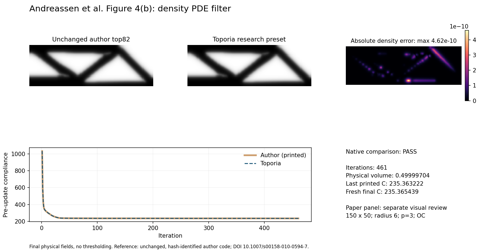
The corrected author top82 refuses radii below 2.5; this recipe uses 6. Printed compliance is pre-update. Final-field agreement is checked after one declared vertical row conversion.
Numerical checks and research matching are separate. Unresolved paper targets remain in to-fix. Transfer curves run through the reproduction command; GUI Run is the documented optimization companion.
native_code_match

The corrected author top82 refuses radii below 2.5; this recipe uses 6. Printed compliance is pre-update. Final-field agreement is checked after one declared vertical row conversion.
paper_reproduction_to_fix
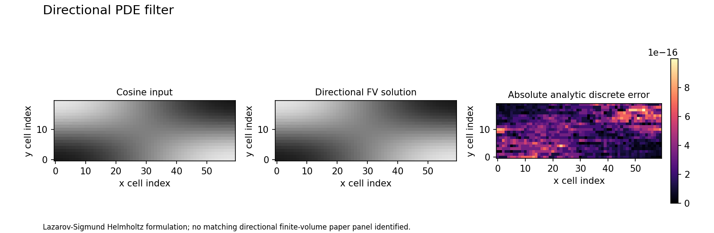
Toporia's anisotropic cell-centred extension differs from the paper's nodal discretization. The generated impulse/cosine figure is an analytic verification, not a reproduced research panel.
paper_reproduction_to_fix
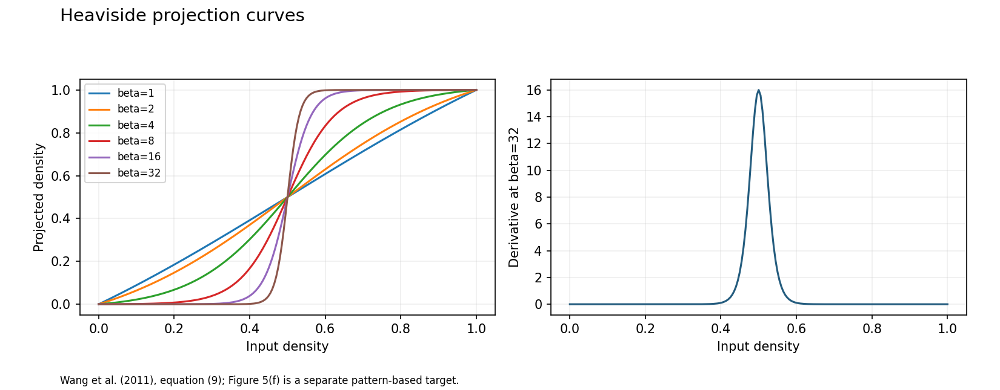
The exact Figure 5 design bitmap is not available here. The transfer curves check the published equation, but are not a reproduction of its pattern panel or evidence of minimum length-scale control.
paper_reproduction_to_fix
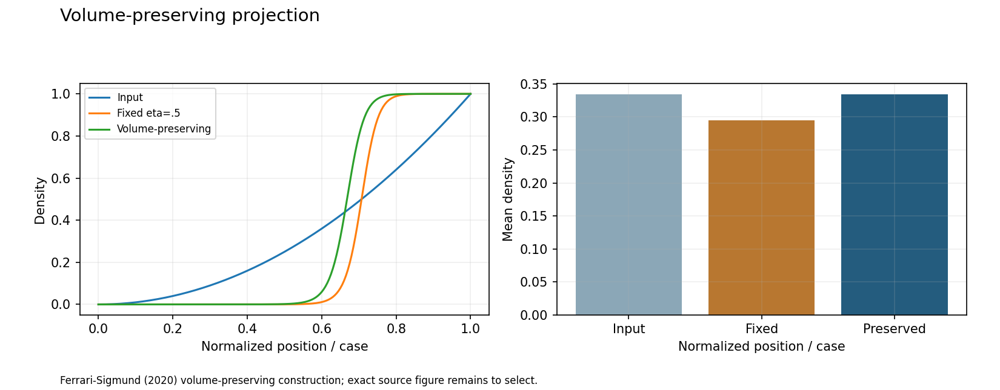
Mean preservation does not make every cell or optimized topology agree with top99neo. The input field here is a controlled ramp, not a paper design.
paper_reproduction_to_fix
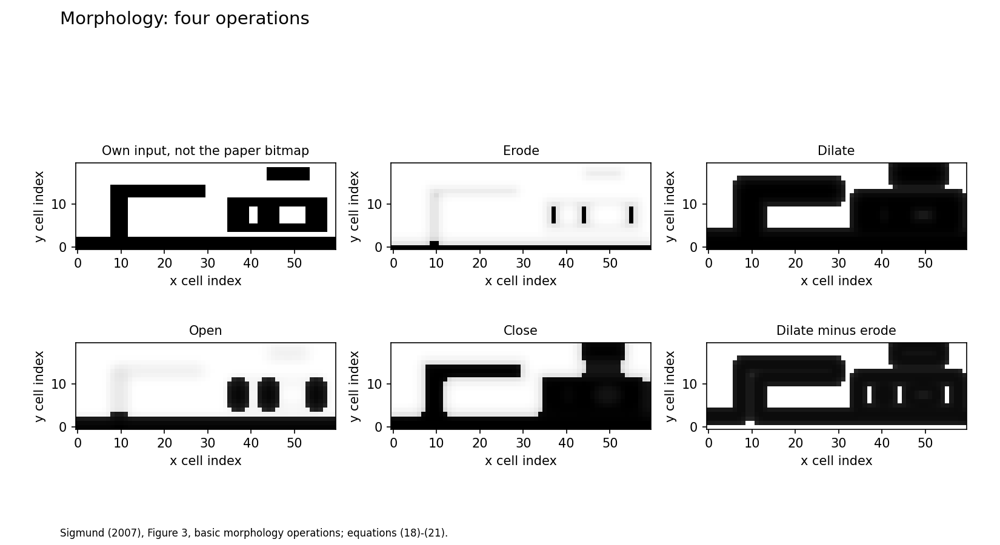
The paper uses a five-cell structuring element and uniform weights for its illustrative binary example. Toporia uses cone weights and finite sharpness; the recreated pattern is not the original bitmap. Opening/closing are not generally exactly volume preserving on arbitrary fields.
paper_reproduction_to_fix
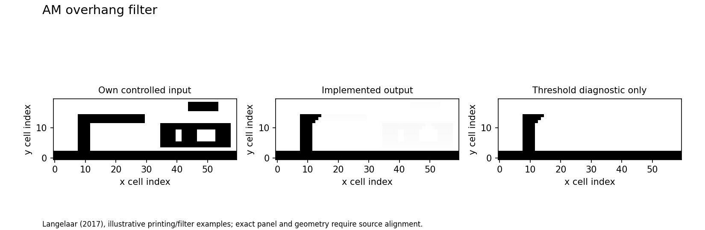
The field is a controlled diagnostic, not an optimized paper topology or a printability certificate. Angle stencils are discrete and display direction must be checked explicitly.
paper_reproduction_to_fix
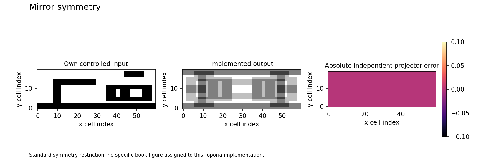
This is an engineering operator demonstration. Symmetric density is not the same as symmetric loads or a symmetric state solution.
paper_reproduction_to_fix
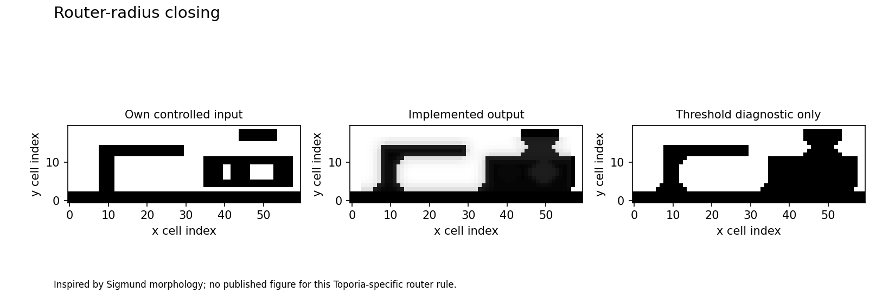
A p-norm construction and threshold differ from the paper's exponential operators. A boundary band bypasses the operation. The volume backward pass floors sensitivity at 1e-6 for OC stability and is not the exact volume derivative where that floor is active. It is not a finite-tool accessibility or collision certificate.
paper_reproduction_to_fix
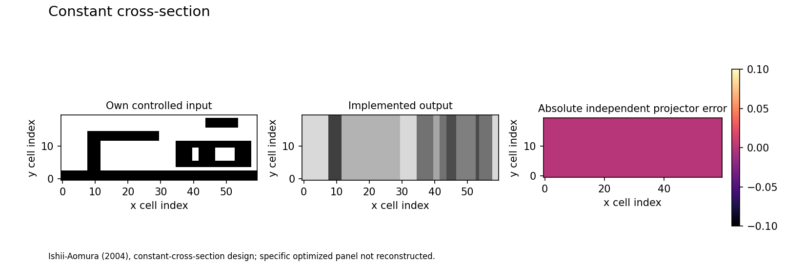
The diagnostic is 2-D. Reproducing a 3-D optimized paper figure also requires its loads, geometry and optimizer settings.
paper_reproduction_to_fix
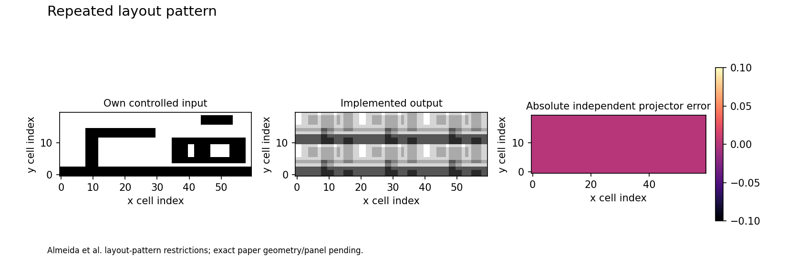
Identical cells alone do not reproduce the paper's optimized structure; supports and loads need not repeat.
paper_reproduction_to_fix
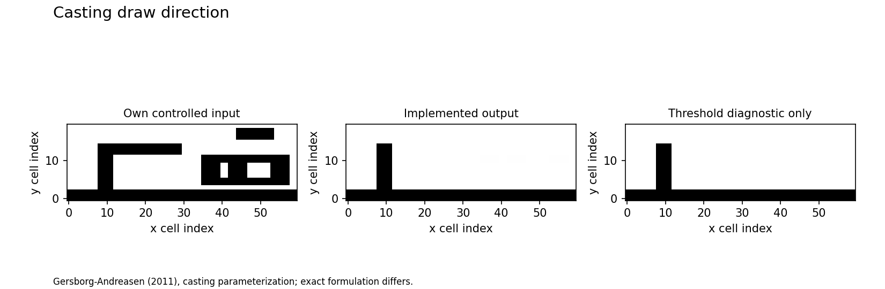
The cited paper uses a Heaviside parameterization. This smooth running-minimum variant is not a direct reproduction; its output is only approximately monotone and does not model a full mould.
paper_reproduction_to_fix
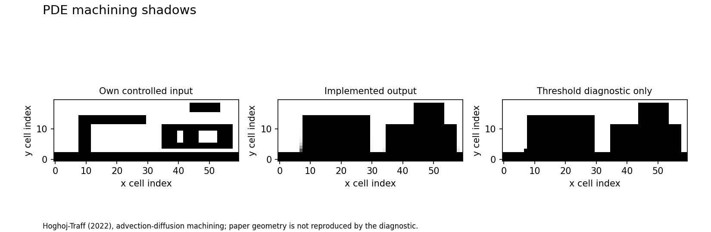
Independent Cartesian cell-centred variant: no finite cutter/holder, oblique directions or forced-void regions. Projection and diffusion can leave access artifacts; no machinability certificate.
paper_reproduction_to_fix
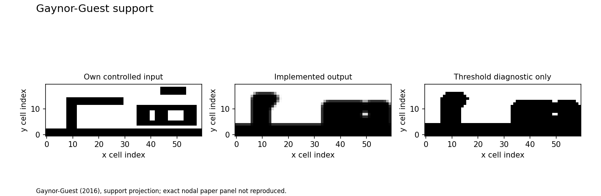
Toporia uses cell centres and a grid-dependent threshold; the paper's nodal examples and this controlled pattern differ. A smooth supported field does not certify a binary design, exact angle or material budget.
paper_reproduction_to_fix
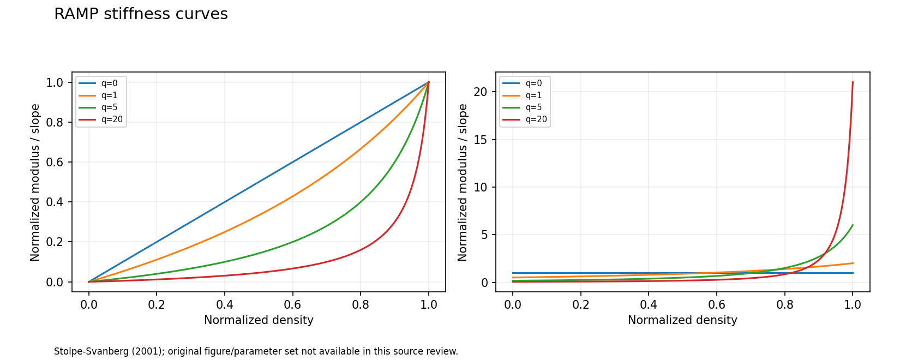
The q values are declared demonstration choices. Equation agreement is not agreement with a numbered paper figure.
source_equation_curve_match
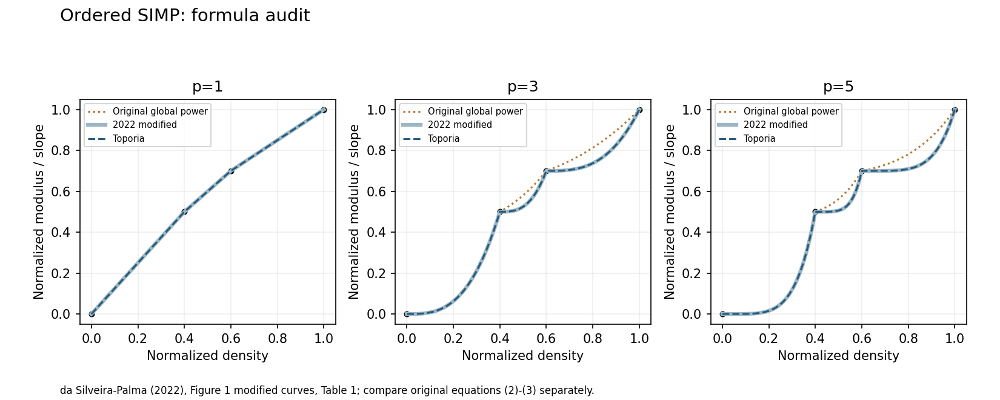
This verifies stiffness interpolation only, with 1e-8 absolute tolerance for the finite soft phase. No cost interpolation, non-monotone moduli, optimizer trajectory or paper bridge design is claimed.
source_equation_curve_match
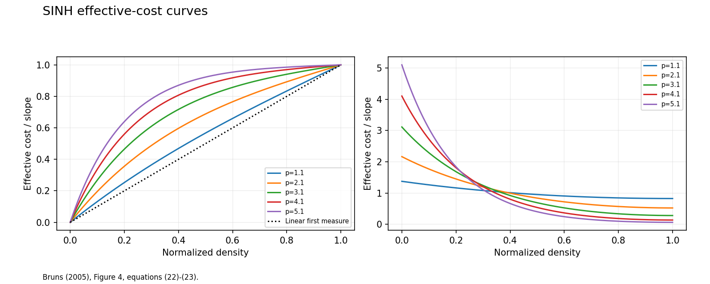
A constitutive/cost-curve reproduction does not reproduce the separate resource-filter case-6 topology. Toporia's companion optimization shares one filtered field between both measures.
source_equation_curve_match
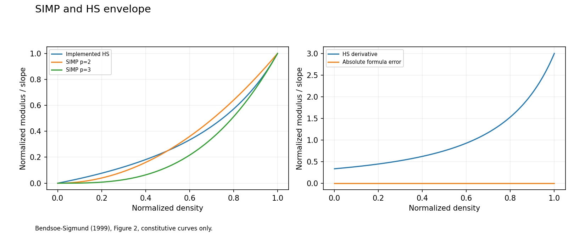
The plot does not reconstruct the inset microstructures or solve inverse homogenization. The optimization companion uses Emin=1e-9 for a nonsingular state solve; the curve experiment uses the exact void limit.
paper_reproduction_to_fix
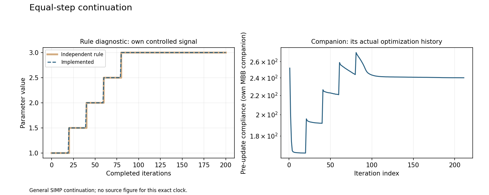
The increment and interval are Toporia demonstration settings, not a reproduced research trajectory.
paper_reproduction_to_fix
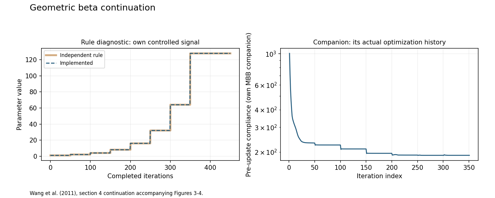
A schedule plot verifies the fixed-interval rule only. It omits early increases at convergence and does not reproduce an optimized paper design.
paper_reproduction_to_fix
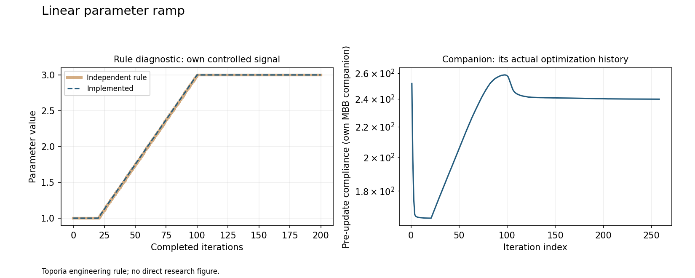
This function has no claimed originating paper. A parameter-history demonstration is not a research-figure reproduction.
paper_reproduction_to_fix
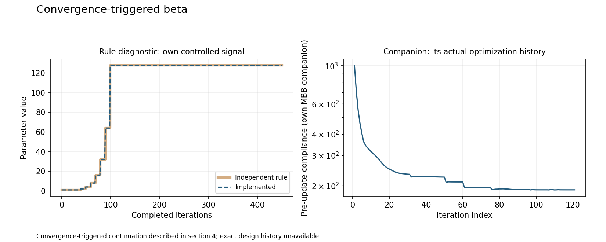
The synthetic change signal and minimum-duration guard are declared Toporia choices. The source paper's actual observed design history is not reconstructed.